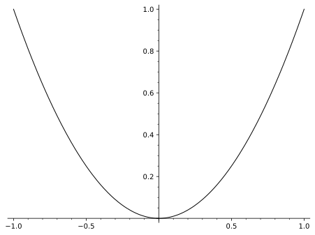

Section 3 PreTeXt
Sous-section 3.1 La philosophie d'un projet PreTeXt
Sur la page d'accueil du projet PreTeXt, on peut y lire: "PreTeXt : Write once, read anywhere". Concrètement, ceci signifie qu'à partir d'un fichier source, on pourra produire facilement plusieurs formats comme:
HTML
PDF
EPUB
Diapositives
Jupyter Notebook
Braille (on y reviendra)
etc.
Le but est que tout format devenant populaire dans le futur devrait avoir sa conversion possible sans effort supplémentaire de la part de l'auteur. Ainsi, si le format COOL devient la nouvelle norme, le travail ne sera pas à recommencer.
PreTeXt est un langage XML (langage de balisage), qui utilise des mots simples pour formater le texte.
Sous-section 3.2 Fonctionalités
Le format HTML est le plus populaire et le plus complet. Voici quelques-unes de ses nombreuses fonctionalités:
Des références à même la page, par le mécanisme « knowl. » Vous souvenez-vous de notre beau Cégep?
Par ces knowls, on peut référencer tout exemple, définition, exercice, figure, table, etc.
Aussi, on peut donner un hyperlien à presque n'importe quelle partie du texte.
-
Un affichage de qualité des équations et symboles scientifiques, utilisant la technologie MathJax. Mon équation préférée est
\begin{equation*} ax^2+bx+c=0\text{.} \end{equation*}J'aime aussi \(\sin^2(\theta)+\cos^2(\theta)=1\text{.}\)
-
Les images peuvent provenir de fichiers externes ou être générées à même le code source, facilitant la mise à jour ou la correction d'erreurs. Le code suivant permet de générer le graphique de la figure Figure 3.2 directement dans le fichier source.
<figure> <caption>Une parabole toute simple</caption> <image> <sageplot> plot(x^2,(x,-1,1),color="black") </sageplot> </image> </figure>Listing 3.1. Le code pour générer une parabole Figure 3.2. Une parabole toute simple Des vidéos peuvent être incluses directement dans le texte, donnant une autre manière de diffuser le contenu.
Possibilité d'écrire du texte brut, utile par exemple dans les cours d'informatique. C'est ce qui a été utilisé pour illustré le code de la parabole.
Des cellules de code exécutables, disponibles en plusieurs langages de programmation scientifique.
Des exercices aléatoires, propulsés par WeBWorK.
Intégration possible avec la plateforme Runestone, permettant l'annotation d'une «copie » individuelle de l'élève et la remise de travaux à même les notes.
Conversion à partir de formats existants vers PreTeXt possible dans certains cas (LaTeX, OpenOffice en développement).
Sous-section 3.3 Accessibilité
De plus en plus, les enseignants s'efforcent de rendre leur matériel le plus accessible et inclusif possible. L'un des concepts fondateurs de PreTeXt est de fournir du contenu accessible. Ceci signifie en particulier :
Décourager l'utilisation de la couleur comme mesure d'emphase, afin que les personnes daltoniennenes ne soient pas désavantagées.
-
Chaque image devrait être accompagnée d'une description, pour accommoder les lecteurs de contenu automatique et les personnes avec handicap visuel. Dans l'image qui suit, vous pouvez apercevoir ma fille:

Figure 3.3. La navigation tabulaire offerte sur le format HTML.
Encore en développement, mais une conversion automatique vers le braille est possible. Quelques détails.
Sous-section 3.4 D'autres exemples de projet PreTeXt
On présente ici d'autres exemples de notes de cours ou manuels rédigés avec PreTeXt. La plupart sont à saveur mathématique, mais on en retrouve aussi dans d'autres domaines.